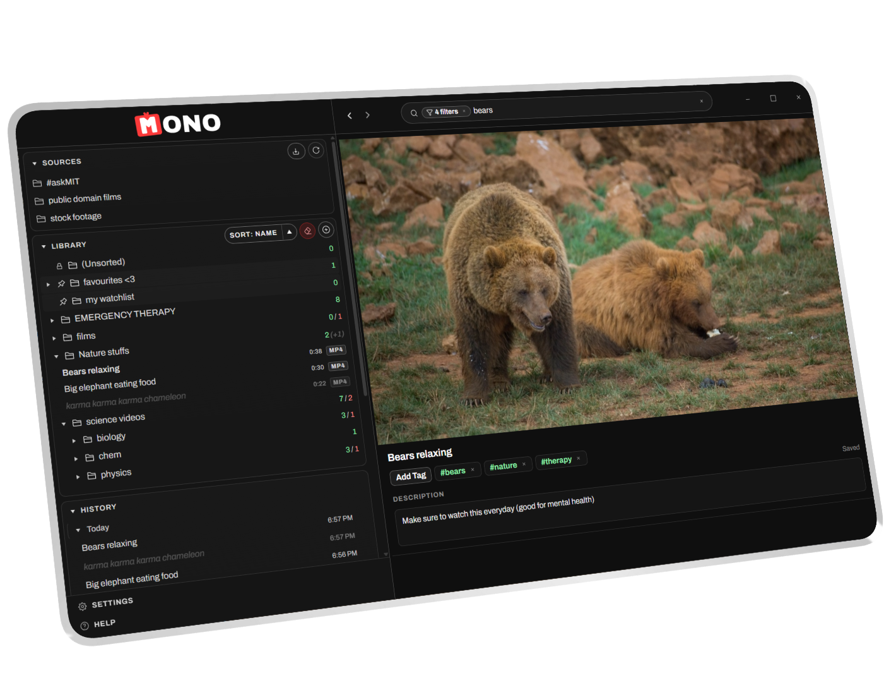
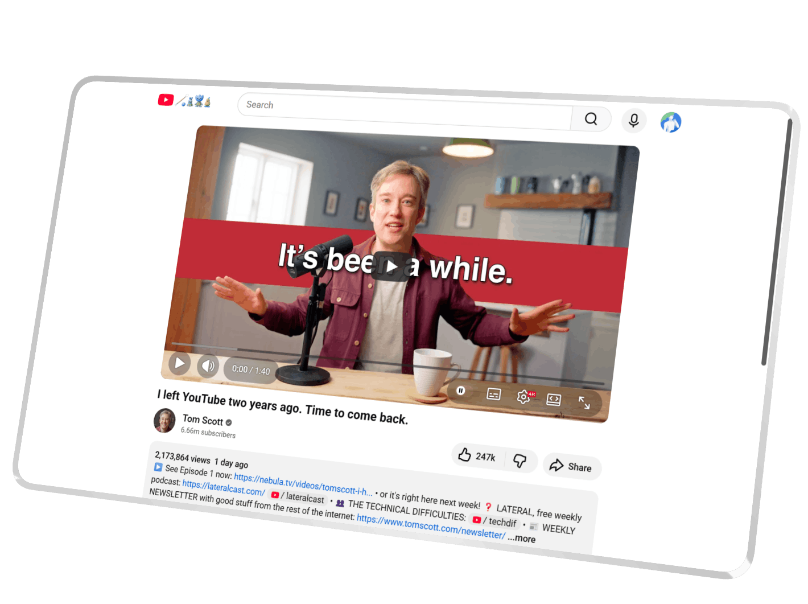

01 / Desktop App
Mono for Desktop
Organise and watch videos stored on your own machine. Import source folders, build a virtual library without moving files on disk, add descriptions and tags, search across your collection, and play videos in-app.
- Keeps your video library on your own computer.
- Organise videos with folders, tags, notes, and search.
- Resume playback with watch history and saved progress.

02 / Browser Extension
Mono for YouTube
A lightweight browser extension that removes recommendations, visual clutter, and dark patterns from YouTube using CSS. It keeps the player, search, description, read-only comments, and account controls.
- Removes recommendations and other attention traps.
- Keeps the video player, search, description, and comments.
- Runs quietly without tracking you or adding extra clutter.
